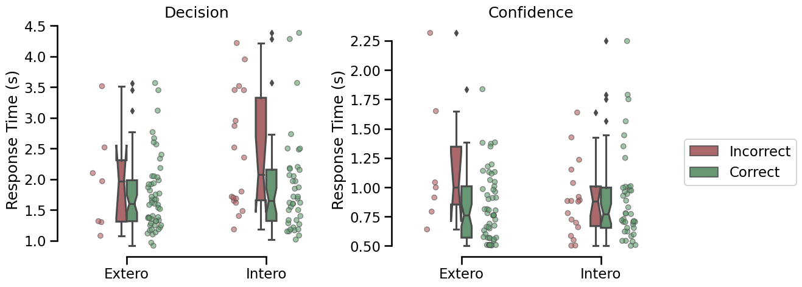
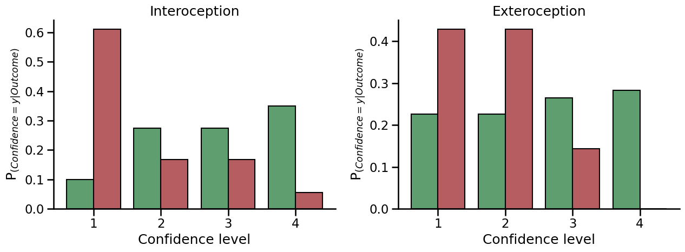
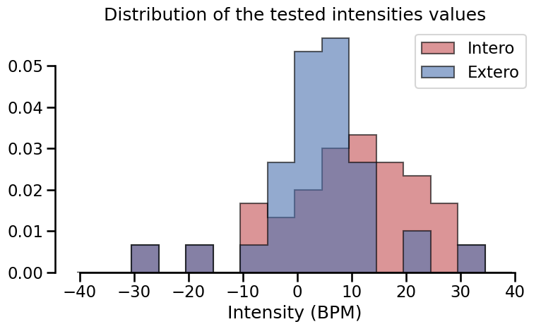
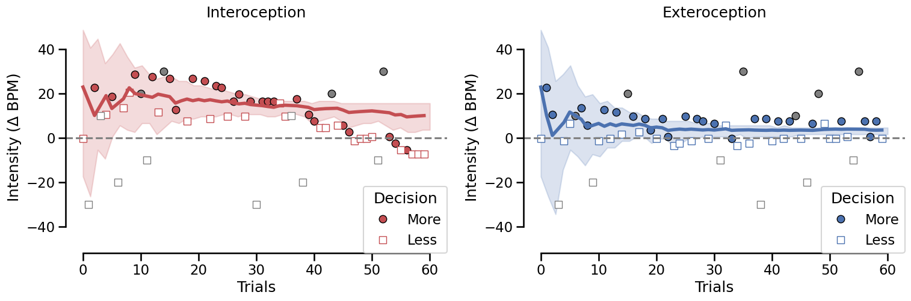
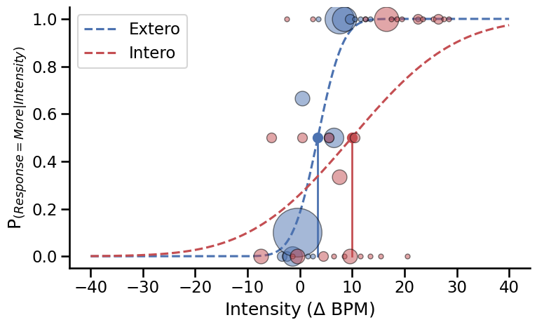
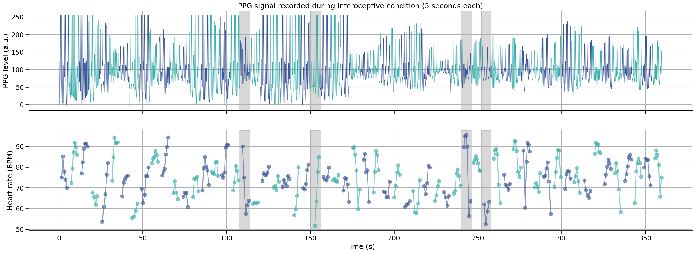
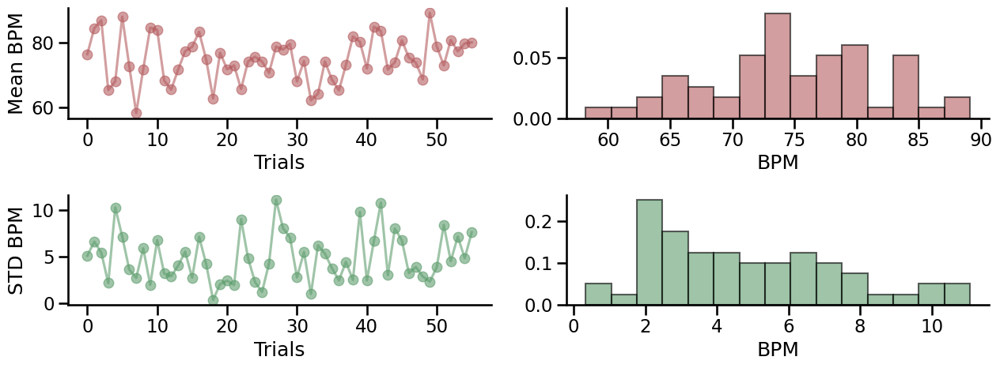

Heart Rate Discrimination task - Summary results#
Author: Nicolas Legrand nicolas.legrand@cas.au.dk
from pathlib import Path
import matplotlib.pyplot as plt
import numpy as np
import pandas as pd
import pingouin as pg
import seaborn as sns
from metadpy import sdt
from metadpy.plotting import plot_confidence
from metadpy.utils import discreteRatings, trials2counts
from scipy.stats import norm
from systole.detection import ppg_peaks
sns.set_context('talk')
%matplotlib inline
---------------------------------------------------------------------------
ModuleNotFoundError Traceback (most recent call last)
Cell In[2], line 5
3 import numpy as np
4 import pandas as pd
----> 5 import pingouin as pg
6 import seaborn as sns
7 from metadpy import sdt
ModuleNotFoundError: No module named 'pingouin'
This notebook introduces basic analysis steps, plots and quality check for the Heart Rate Discrimination task. The current version use data from a young and healthy participant tested with the default task parameters implemented in the launcher.py file (80 trials per condition, 30 using a 1-Up/1-Down staircase and 50 using the Psi method.
The target directory is defined by the path variable and should include the following files: final.txt (the behavioural data), Intero_posterior.npy and Extero_posterior.npy (the posterior estimates) and signal.txt (the PPG signal time series during the interoception trials).
Import data
# Define the result and report folders - This should be adapted to you own settings
resultPath = Path(Path.cwd(), "data", "HRD")
reportPath = Path(Path.cwd(), "reports")
# ensure that the paths are pathlib instance in case they are passed through cardioception.reports.report
resultPath = Path(resultPath)
reportPath = Path(reportPath)
# Logs dataframe
df = pd.read_csv(
[file for file in Path(resultPath).glob('*final.txt')][0]
)
# History of posteriors distribution
try:
interoPost = np.load(
[file for file in Path(resultPath).glob('*Intero_posterior.npy')][0]
)
except:
interoPost = None
try:
exteroPost = np.load(
[file for file in Path(resultPath).glob('*Extero_posterior.npy')][0]
)
except:
exteroPost = None
# PPG signal
signal_df = pd.read_csv(
[file for file in Path(resultPath).glob('*signal.txt')][0]
)
signal_df['Time'] = np.arange(0, len(signal_df))/1000 # Create time vector
Response time#
palette = ['#b55d60', '#5f9e6e']
fig, axs = plt.subplots(1, 2, figsize=(13, 5))
for i, task, title in zip([0, 1], ['DecisionRT', 'ConfidenceRT'], ['Decision', 'Confidence']):
sns.boxplot(data=df, x='Modality', y=task, hue='ResponseCorrect',
palette=palette, width=.15, notch=True, ax=axs[i])
sns.stripplot(data=df, x='Modality', y=task, hue='ResponseCorrect',
dodge=True, linewidth=1, size=6, palette=palette, alpha=.6, ax=axs[i])
axs[i].set_title(title)
axs[i].set_ylabel('Response Time (s)')
axs[i].set_xlabel('')
axs[i].get_legend().remove()
sns.despine(trim=10)
handles, labels = axs[0].get_legend_handles_labels()
plt.legend(handles[0:2], ['Incorrect', 'Correct'], bbox_to_anchor=(1.05, .5), loc=2, borderaxespad=0.)
<matplotlib.legend.Legend at 0x7efcf4935eb0>

Response time distribution for the decision and the confidence rating phases for correct (red) and incorrect (green) responses.
Metacognition#
SDT estimate for decision 1 perforamces (d’ and criterion)
for i, cond in enumerate(['Intero', 'Extero']):
this_df = df[df.Modality == cond].copy()
if len(this_df) > 0:
this_df['Stimuli'] = (this_df.responseBPM > this_df.listenBPM)
this_df['Responses'] = (this_df.Decision == 'More')
hit, miss, fa, cr = this_df.scores()
hr, far = sdt.rates(hits=hit, misses=miss, fas=fa, crs=cr)
d, c = sdt.dprime(hit_rate=hr, fa_rate=far), sdt.criterion(hit_rate=hr, fa_rate=far)
print(f'Condition: {cond} - d-prime: {d} - criterion: {c}')
Condition: Intero - d-prime: 1.38023349795524 - criterion: 0.4602326313983878
Condition: Extero - d-prime: 2.699085962223946 - criterion: 0.382121415010272
fig, axs = plt.subplots(1, 2, figsize=(13, 5))
for i, cond in enumerate(['Intero', 'Extero']):
try:
this_df = df[(df.Modality == cond) & (df.RatingProvided == 1)]
this_df = this_df[~this_df.Confidence.isnull()]
new_confidence, _ = discreteRatings(this_df.Confidence)
this_df['Confidence'] = new_confidence
this_df['Stimuli'] = (this_df.Alpha > 0).astype('int')
this_df['Responses'] = (this_df.Decision == 'More').astype('int')
nR_S1, nR_S2 = trials2counts(data=this_df)
plot_confidence(nR_S1, nR_S2, ax=axs[i])
axs[i].set_title(f'{cond}ception')
except:
print('Invalid ratings')
this_df = df[df.Modality == cond]
sns.histplot(this_df[this_df.ResponseCorrect==1].Confidence, ax=axs[i], color="#5f9e6e",)
sns.histplot(this_df[this_df.ResponseCorrect==0].Confidence, ax=axs[i], color="#b55d60")
axs[i].set_title(f'{cond}ception')
sns.despine()
plt.tight_layout()

Distribution of confidence ratings for correct (green) and incorrect (red) trials. Overlapping distribution suggests that the subjective confidence in the decision was not predictive of decision performances.
Psychophysics#
Distribution of the intensities values.
fig, axs = plt.subplots(1, 1, figsize=(8, 5))
for cond, col in zip(['Intero', 'Extero'], ['#c44e52', '#4c72b0']):
this_df = df[df.Modality == cond]
axs.hist(this_df.Alpha, color=col, bins=np.arange(-40.5, 40.5, 5), histtype='stepfilled',
ec="k", density=True, align='mid', label=cond, alpha=.6)
axs.set_title('Distribution of the tested intensities values')
axs.set_xlabel('Intensity (BPM)')
plt.legend()
sns.despine(trim=10)
plt.tight_layout()

Staircases#
Psi#
if sum(df.TrialType == 'psi') > 0:
fig, axs = plt.subplots(figsize=(18, 5), nrows=1, ncols=2)
# Plot confidence interval for each staircase
def ci(x):
return np.where(np.cumsum(x) / np.sum(x) > .025)[0][0], \
np.where(np.cumsum(x) / np.sum(x) < .975)[0][-1]
try:
for i, stair, col, modality in zip([0, 1],
[interoPost, exteroPost],
['#c44e52', '#4c72b0'],
['Intero', 'Extero']):
this_df = df[(df.Modality == modality) & (df.TrialType != 'UpDown')]
ciUp, ciLow = [], []
for t in range(stair.shape[0]):
up, low = ci(stair.mean(2)[t])
rg = np.arange(-50.5, 50.5)
ciUp.append(rg[up])
ciLow.append(rg[low])
axs[i].fill_between(x=np.linspace(0, len(this_df), len(ciUp)),
y1=ciLow,
y2=ciUp,
color=col, alpha=.2)
except:
pass
# Staircase traces
for i, modality, col in zip([0, 1], ['Intero', 'Extero'], ['#c44e52', '#4c72b0']):
this_df = df[(df.Modality == modality) & (df.TrialType != 'UpDown')]
# Show UpDown staircase traces
axs[i].plot(np.arange(0, len(this_df))[this_df.TrialType == 'high'],
this_df.Alpha[this_df.TrialType == 'high'], linestyle='--', color=col, linewidth=2)
axs[i].plot(np.arange(0, len(this_df))[this_df.TrialType == 'low'],
this_df.Alpha[this_df.TrialType == 'low'], linestyle='-', color=col, linewidth=2)
# Use different colors for psi and catch trials
for trialCond, pointCol in zip(['psi', 'psiCatchTrial'], [col, 'gray']):
axs[i].plot(np.arange(0, len(this_df))[(this_df.Decision == 'More') & (this_df.TrialType == trialCond)],
this_df.Alpha[(this_df.Decision == 'More') & (this_df.TrialType == trialCond)],
pointCol, marker='o', linestyle='', markeredgecolor='k', label=cond)
axs[i].plot(np.arange(0, len(this_df))[(this_df.Decision == 'Less') & (this_df.TrialType == trialCond)],
this_df.Alpha[(this_df.Decision == 'Less') & (this_df.TrialType == trialCond)],
'w', marker='s', linestyle='', markeredgecolor=pointCol, label=modality)
# Psi trials
axs[i].plot(np.arange(len(this_df))[this_df.TrialType=='psi'],
this_df[this_df.TrialType=='psi'].EstimatedThreshold, linestyle='-', color=col, linewidth=4)
axs[i].axhline(y=0, linestyle='--', color = 'gray')
handles, labels = axs[i].get_legend_handles_labels()
axs[i].legend(handles[0:2], ['More', 'Less'], borderaxespad=0., title='Decision')
axs[i].set_ylabel('Intensity ($\Delta$ BPM)')
axs[i].set_xlabel('Trials')
axs[i].set_ylim(-52, 52)
axs[i].set_title(modality+'ception')
sns.despine(trim=10, ax=axs[i])
plt.gcf()

This figure represents the evolution of threshold estimate across trials for the Interoception and Exteroception condition. Shaded areas represent the 95% confidence interval of the threshold estimate by Psi. For each condition, the first 30 trials (connected with dashed lines) were allocated to an Up/Down method (2 interleaved staircases starting a -40.5 or 40 respectively). The intensities and responses were included in the Psi staircase to maximize the amount of information included. The remaining 50 trials were monitored by the Psi staircase only. This dual estimation was implemented to estimate the reliability of the estimation of threshold using an up/down procedure, as compared to a longer psi procedure.
Psychometric function#
sns.set_context('talk')
fig, axs = plt.subplots(figsize=(8, 5))
for i, modality, col in zip((0, 1), ['Extero', 'Intero'], ['#4c72b0', '#c44e52']):
this_df = df[(df.Modality == modality) & (df.TrialType == 'psi')]
if len(this_df) > 0:
t, s = this_df.EstimatedThreshold.iloc[-1], this_df.EstimatedSlope.iloc[-1]
# Plot Psi estimate of psychometric function
axs.plot(np.linspace(-40, 40, 500),
(norm.cdf(np.linspace(-40, 40, 500), loc=t, scale=s)),
'--', color=col, label=modality)
# Plot threshold
axs.plot([t, t], [0, .5], color=col, linewidth=2)
axs.plot(t, .5, 'o', color=col, markersize=10)
# Plot data points
for ii, intensity in enumerate(np.sort(this_df.Alpha.unique())):
resp = sum((this_df.Alpha == intensity) & (this_df.Decision == 'More'))
total = sum(this_df.Alpha == intensity)
axs.plot(intensity, resp/total, 'o', alpha=0.5, color=col,
markeredgecolor='k', markersize=total*5)
plt.ylabel('P$_{(Response = More|Intensity)}$')
plt.xlabel('Intensity ($\Delta$ BPM)')
plt.tight_layout()
plt.legend()
sns.despine()

Psychometric functions fitted using the estimated threshold and slope from the final trial on each condition. The size of the circles reflects the proportion of responses for each intensity level.
Pulse oximeter#
Visualization of PPG signal#
This interactive graph shows the PPG signal recorded at each interoceptive trial. Blue and red time series represent different trials of 6 seconds each. In each trial, the 5 last seconds were used to estimate the average heart rate of the participant, the first second was included to help peak detection algorithm initialization.
Bad trials are represented with shaded area. A trial was marked as bad and removed if one of the two conditions was met:
Contain a RR interval marked as an outlier. Outliers were detected using the MAD rule on all RR intervals in the recording.
The standard deviation of the RR interval inside the trial is larger than 5.
drop, bpm_std, bpm_df = [], [], pd.DataFrame([])
clean_df = df.copy()
clean_df['HeartRateOutlier'] = np.zeros(len(clean_df), dtype='bool')
for i, trial in enumerate(signal_df.nTrial.unique()):
color = '#c44e52' if (i % 2) == 0 else '#4c72b0'
this_df = signal_df[signal_df.nTrial==trial] # Downsample to save memory
signal, peaks = ppg_peaks(this_df.signal, sfreq=1000)
bpm = 60000/np.diff(np.where(peaks)[0])
bpm_df = pd.concat(
[
bpm_df,
pd.DataFrame({'bpm': bpm, 'nEpoch': i, 'nTrial': trial})
]
)
# Check for outliers in the absolute value of RR intervals
for e, t in zip(bpm_df.nEpoch[pg.madmedianrule(bpm_df.bpm.to_numpy())].unique(),
bpm_df.nTrial[pg.madmedianrule(bpm_df.bpm.to_numpy())].unique()):
drop.append(e)
clean_df.loc[t, 'HeartRateOutlier'] = True
# Check for outliers in the standard deviation values of RR intervals
for e, t in zip(np.arange(0, bpm_df.nTrial.nunique())[pg.madmedianrule(bpm_df.copy().groupby(['nTrial', 'nEpoch']).bpm.std().to_numpy())],
bpm_df.nTrial.unique()[pg.madmedianrule(bpm_df.copy().groupby(['nTrial', 'nEpoch']).bpm.std().to_numpy())]):
if e not in drop:
drop.append(e)
clean_df.loc[t, 'HeartRateOutlier'] = True
meanBPM, stdBPM, rangeBPM = [], [], []
fig, ax = plt.subplots(nrows=2, sharex=True, figsize=(30, 10))
for i, trial in enumerate(signal_df.nTrial.unique()):
color = '#3a5799' if (i % 2) == 0 else '#3bb0ac'
this_df = signal_df[signal_df.nTrial==trial] # Downsample to save memory
# Mark as outlier if relevant
if i in drop:
ax[0].axvspan(this_df.Time.iloc[0], this_df.Time.iloc[-1], alpha=.3, color='gray')
ax[1].axvspan(this_df.Time.iloc[0], this_df.Time.iloc[-1], alpha=.3, color='gray')
ax[0].plot(this_df.Time, this_df.signal, label='PPG', color=color, linewidth=.5)
# Peaks detection
signal, peaks = ppg_peaks(this_df.signal, sfreq=1000)
bpm = 60000/np.diff(np.where(peaks)[0])
m, s, r = bpm.mean(), bpm.std(), bpm.max() - bpm.min()
meanBPM.append(m)
stdBPM.append(s)
rangeBPM.append(r)
# Plot instantaneous heart rate
ax[1].plot(this_df.Time.to_numpy()[np.where(peaks)[0][1:]],
60000/np.diff(np.where(peaks)[0]),
'o-', color=color, alpha=0.6)
ax[1].set_xlabel("Time (s)")
ax[0].set_ylabel("PPG level (a.u.)")
ax[1].set_ylabel("Heart rate (BPM)")
ax[0].set_title("PPG signal recorded during interoceptive condition (5 seconds each)")
sns.despine()
ax[0].grid(True)
ax[1].grid(True)

Note
Here we are only representing the interoception trials, as the quality of the PPG recording will not affect the exteroception condition.
Heart rate - Summary statistics#
This figure show the evolution of the average and standard deviation of the instantaneous heart rate across time. An instantaneous frequnecy was derived between each peak detected in the PPG signal (also known as pulse-to-pulse intervals, or pseudo RR intervals). Rapid increase or decrease of the heart rate frequency can lead to larger standard deviation, and less accurate estimation of the average heart rate.
sns.set_context('talk')
fig, axs = plt.subplots(figsize=(13, 5), nrows=2, ncols=2)
meanBPM = np.delete(np.array(meanBPM), np.array(drop))
stdBPM = np.delete(np.array(stdBPM), np.array(drop))
for i, metric, col in zip(range(3), [meanBPM, stdBPM], ['#b55d60', '#5f9e6e']):
axs[i, 0].plot(metric, 'o-', color=col, alpha=.6)
axs[i, 1].hist(metric, color=col, bins=15, ec="k", density=True, alpha=.6)
axs[i, 0].set_ylabel('Mean BPM' if i == 0 else 'STD BPM')
axs[i, 0].set_xlabel('Trials')
axs[i, 1].set_xlabel('BPM')
sns.despine()
plt.tight_layout()

Save dataframe#
print(f'{clean_df["HeartRateOutlier"][clean_df.Modality=="Intero"].sum()} Interoception trials and {clean_df["HeartRateOutlier"][clean_df.Modality=="Extero"].sum()} exteroception trials were dropped after trial rejection based on heart rate outliers.')
# uncomment this to save the results in the result folder
# clean_df.to_csv(Path(reportPath, "preprocessed.txt"), index=False)
4 Interoception trials and 0 exteroception trials were dropped after trial rejection based on heart rate outliers.